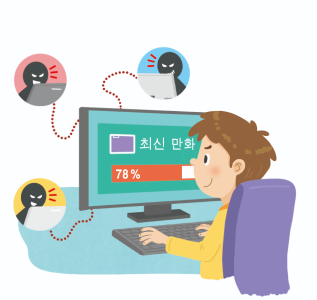
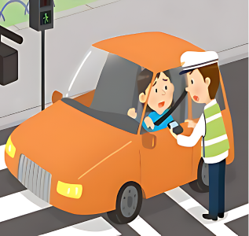

1번
다음 ㉠과 ㉡에 들어갈 알맞은 말을 각각 선택하세요.
 
사람들의 권리를 보호하고자 국가가 만든 규범을 ㉠
선택하세요.
법
도덕
이라고 합니다. 이것은 여러 사람이 함께 살아가기 위해서 모두가 지켜야 하는 규범이며, 일상생활 속에서 사람들을 보호해 줍니다. 대표적인 특징으로는 ㉡
선택하세요.
마음에서 우러나와 하는 행동이라는 점
양심에 맞게 자율적으로 지키면 된다는 점
강제성이 있고 지키지 않으면 처벌받는다는 점
이 있습니다.